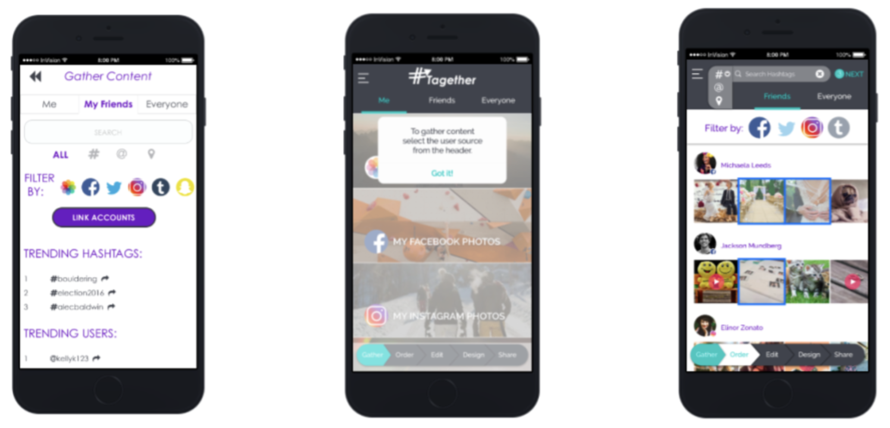

#tagether
Project Overview
- Timeframe: 3 months
- Team size: 8
- Role: UX Researcher, UX Designer
- Target User: Social Media Users
- Platform: Mobile
We set out to create a product that would afford users a quick and easy way to gather content from social media to create videos. There are two facets that allow users to engage with our platform: search and ‘tagging’. By sourcing content using not only locations and user names, we open up avenues to users by allowing them to filter by hashtag. Once their content is compiled, users can personalize their videos using captions, music, and themes. #Tagether is not a social media platform but allows users to save videos to their own device and post to social media. #Tagether enhances users’ experiences of social sharing by enabling seamless video creation from source material collected across multiple platforms.
Contextual inquiry was used to create a user scenario: this app would serve those who either attend or coordinate events. The individuals I sought out and interviewed met certain criteria: had recently planned events using social media and actively used 3 forms of social media platforms (either Facebook, Twitter, Instagram, or Snapchat). These interviews utilized a variety of questions but allowed individuals the comfort and freedom of expressing themselves through conversation.
We utilized an iterative design process for the remainder of the project, utilizing usability research in each round. The design lifecycle began at a low-fidelity paper based prototype and evolved into a high-fidelity prototype.
Iteration 2
For our second round, medium-fidelity design we used InVision. This allowed us to test how users respond to interactions as well as how they handle navigating through the application. 5 participants were tested in person using the InVision mobile app.
Iteration 3
For our third and fourth rounds of user testing we made use of UserTesting.com. For these rounds of testing we had users test #Tagether using InVision’s website in order to be able to see where participants were attempting to click.
Iteration 4
Testing of our 3rd iteration uncovered additional changes we wanted to make before deploying our final 12 tests. Most of the tweaks were in the design screens, where the user can add a caption, theme, and soundtrack. We made the cover image for the video smaller so that features “below the fold” would not be missed.